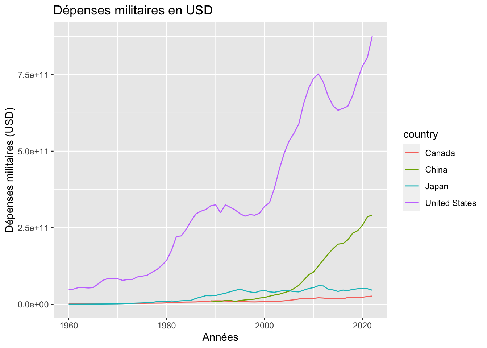

library(WDI)
library(tidyverse)
dat <- WDI(country = "all",
indicator = c("military_expend" = "MS.MIL.XPND.CD"))
dat %>%
filter(country == "Japan" | country == "China" |
country == "United States" | country == "Canada") %>%
ggplot(aes(year, military_expend, color = country)) +
geom_line() +
labs(title = "Dépenses militaires en USD",
x = "Années",
y = "Dépenses militaires (USD)")L’intelligence artificielle dans les sciences sociales: questions, enjeux et opportunités
Plan de la séance
- Qui suis-je?
- Définition et différents type d’IA
- Défis et enjeux éthique de l’IA
- Focus sur ChatGPT
- L’IA en science sociale
- Exemple de recherche: MPSA
- Quelle est la place du chercheur maintenant?
Objectif d’apprentissage
- Développer son regard critique sur sa propre utilisation de l’IA
- Réfléchir quant aux opportunités ainsi qu’aux enjeux que l’IA présente
Qui suis-je?
Quizz: Qu’est-ce que c’est?
Qui suis-je?
- Diplômé de l’Université de Montréal (B. Sc.) en science politique, cheminement Honor réalisé sous les judicieux conseils de Pr. Richard Nadeau
- Titre du projet: Le Japon et la Covid-19: Paradoxe et culture
- Présentement étudiant à la maîtrise en science politique
- Titre du mémoire: Vers un renouveau de la culture stratégique au Japon?
Définition et différents type d’IA
Définition générale de l’IA
Peut-on parler de l’intelligence artificielle au singulier?
L’intelligence artificelle comme champ d’étude
- Évolution constante du champ! Comment le définir alors?
Synthèse: IA consiste à reproduire artificiellement certaines capacités cognitives humaines afin de rendre les machines « intelligentes » en leur donnant la faculté de résoudre des problèmes par elles-mêmes.
- Intelligence étant définit de la façon suivante : « L’intelligence est la partie informatique de la capacité à atteindre des objectifs dans le monde. On trouve différents types et degrés d’intelligence chez l’homme, chez de nombreux animaux et chez certaines machines. » (McCarthy 2007), pp. 2) [Traduction DeepL]
Laisser les étudiants répondre aux question.
Il s’agit d’un ensemble d’objets, relativement vaste et en constante expansion, qui s’intéressent, à sa façon, à l’intelligence artificielle.
- Analogie avec la science politique
Principaux champs de l’IA
Source: https://openclassrooms.com/fr/courses/6417031-objectif-ia-initiez-vous-a-lintelligence-artificielle/6822141-reperez-vous-dans-le-champ-de-lintelligence-artificielle
Général : le moins populaire en nombre de recherches et d’applications, cherche à développer une machine qui aurait les mêmes capacités cognitives que l’humain, non seulement en termes de résolution de problème, d’apprentissage et de planification, mais aussi qui serait dotée d’une conscience de soi.
Précis : plus restrictif, se limitant à la réalisation d’un ou de plusieurs objectifs spécifiques. De ces deux visées, il y a trois principaux champs de recherche qui se penchent sur les méthodes de fonctionnement de l’IA : l’apprentissage machine (machine learning), les réseaux neuronaux artificiel (artificial neural networks) ainsi que l’apprentissage profond (deep learning).
Apprentissage machine/machine learning : « […] consiste à programmer des ordinateurs pour optimiser un critère de performance à l’aide de données d’exemple ou d’expériences passées. Nous avons un modèle défini jusqu’à certains paramètres, et l’apprentissage est l’exécution d’un programme informatique pour optimiser les paramètres du modèle à l’aide des données d’entraînement ou de l’expérience passée. » [Traduction DeepL]
Apprentissage profond/deep learning : […] fait référence à un réseau neuronal composé de plus de trois couches […]. L’apprentissage en profondeur automatise une grande partie de l’extraction des caractéristiques, éliminant ainsi une partie de l’intervention humaine manuelle nécessaire et permettant l’utilisation d’ensembles de données plus importants. Il peut ingérer des données non structurées dans leur forme brute et déterminer automatiquement la hiérarchie des caractéristiques qui distinguent les différentes catégories de données les unes des autres, ne nécessitant pas d’intervention humaine. » [Traduction DeepL]
Réseaux neuronaux artificiels/artificial neural networks : « Les réseaux neuronaux artificiels (RNA) sont constitués d’une couche de nœuds, contenant une couche d’entrée, une ou plusieurs couches cachées et une couche de sortie. Chaque nœud, ou neurone artificiel, se connecte à un autre et possède un poids et un seuil associés. Si la sortie d’un nœud individuel est supérieure à la valeur seuil spécifiée, ce nœud est activé et envoie des données à la couche suivante du réseau. Dans le cas contraire, aucune donnée n’est transmise à la couche suivante du réseau. »
Évolution récente

Qu’est-ce qu’on remarque?
Loin d’être une trajectoire linéaire!
Dans un article paru dans The Economist, Yoshua Bengio nous dit qu’il prévoyait le développement d’une IA avec des capacités similaires à celles de l’humain d’ici quelques décennies, peut-être un siècle. Depuis l’arrivée de ChatGPT-4, celui-ci a revu sa prédiction pour la situer entre quelques années et quelques décennies
En tant que chercheur en science sociale, pourquoi devrait-on être préoccué par le développement de l’IA?
Poser la question aux étudiant.es
Commencer à réfléchir et à analyser les impacts de l’IA sur nos sociétés. La capacité des LLM à générer et à manipuler le language en font de puissants outils qui ont le potentiel d’avoir de profonds impacts sur nos civilisations (Yuval Noah Harrari)
Anticipations
Présentement, il est anticipé que cette technologie puisse être utilisée pour « générer et partager de fausses informations, érodant la confiance sociale et la démocratie; pour surveiller, manipuler et maîtriser les citoyens, nuisant aux libertés individuelles et collectives; ou pour créer de puissantes armes physiques ou digitales qui menaceraient la vie humaine. » [Traduction libre] [@bremmer_suleyman23, pp. 32].
Défis et enjeux éthiques de l’IA
Défis et enjeux éthiques: par où on commence?
En tant qu’étudiant, professeur, professionnel ou chercheur, il faut se questionner par rapport à notre propre utilisation des différents outils de l’IA.
Il est important de comprendre qu’il y a plus de questions que de réponses pour l’instant.
- Doit-on pour autant rester passif?
Doit s’engager dans la réflexion!
Une bonne utilisation débute par une réflexion!
Rester passif? Poser la question aux élèves
certaines universités se sont déjà dotées de lignes directrices quant à l’utilisation de robots conversationnels et de l’IA générative[^chapitre_9-2].
Défis et enjeux éthiques: solution
- Réflexion collective
- L’accompagnement et l’encadrement dans l’exploration et l’utilisation de l’IA nous paraissent être une bonne stratégie à adopter afin de permettre le développement de bonnes pratiques
- Les universités apparaissent donc comme des endroits privilégiés pour ce genre de réflexion!
Focus sur ChatGPT
1. Bonnes pratiques d’utilisation
Documenter chaque utilisation!
Doit-on citer ChatGPT?
La réponse: oui!
Qui doit-on citer alors?
La réponse: Le développeur \(\rightarrow\) OpenAI
Se créer un document dans lequel on inclue la date d’utilisation, la question demandée, ainsi que la réponse obtenue. Pourra ajouter à notre annexe dans notre recherche.
Selon-vous, doit-on citer ChatGPT? Autrement dit, est-ce que c’est comme consulter un article scientifique/livre?
Certains manuels de style, comme APA et Chicago, se sont dotés de lignes directrices quant à l’utilisation des robots conversationnels. CITATIONS.
2. Quand utiliser ChatGPT?
- Problèmes/erreurs avec notre code!
- Où se trouve mon erreur?
library(WDI)
dat <- WDI(country = "all",
indicator = c("military_expend" = "MS.MIL.XPND.CD"))
dat %>%
filter(country == "Japan" | country == "China" |
country == "United States" | country == "Canada") %>%
ggplot(aes(year, military_expend, color = country)) +
geom_line() +
labs(title = "Dépenses militaires en USD",
x = "Années",
y = "Dépenses militaires (USD)")
Error in dat %>% filter(country == "Japan" | "China" | "United States" | :
could not find function "%>%"- dplyr ne sera pas suffisant, pour le graphique besoin de ggplot
Warning: Removed 29 rows containing missing values (`geom_line()`).
2. Quand utiliser ChatGPT?
Trouver des livres pour un travail de recherche
ATTENTION!
2. Quand utiliser ChatGPT?
Ne pas utiliser ChatGPT pour faire des résumer de livre, ni de concept!
- Porte d’entrée intéressante, mais pas suffisante
- Triangulation
2. Quand utiliser ChatGPT?
- Recettes!
 {.fig-align=“center”}
{.fig-align=“center”}
Conclusion
Quelle est la place du chercheur maintenant?
L’avenir du chercheur est-il en danger? Pourrait-on assister au développement des sciences sociales sans chercheur humain derrière? Si tel est le cas, est-ce que ça ne constituerait pas un paradoxe important? Est-ce que la machine est mieux placée pour comprendre la réalité du monde sociale, ainsi que ses mécanismes, que l’humain?
. . .
Élargir la question et notre perspective et dépasser la question quant à savoir si la profession de chercheur va disparaître ou non. En fait, il faut se questionner par rapport au rôle du chercheur. Qu’est-ce qu’il devient à l’ère de l’intelligence artificielle?
Laboratoires autonomes
Il n’est pas difficile d’imaginer un monde où tout le processus scientifique, de la conception jusqu’à la communication, serait fait par l’IA. Le chercheur perdrait ainsi sa profession, et se limiterait à n’être qu’une partie de l’auditoire vers qui les résultats sont présentés.
Problème de la reproductibilité et de la transparence des recherches.
Réflexion sur le transhumanisme
Transhumanisme, «[…] un mouvement international, culturel et intellectuel, prônant l’usage des sciences et des techniques dans le but d’améliorer la condition humaine, notamment par l’augmentation des capacités physiques et mentales des êtres humains » (Forestier et Ansermet 2021)
La question principale qui se pose est: est-ce vraiment raisonnable d’augmenter les capacités humaines au-delà de leur limite biologique? Surtout, que deviendront les sciences sociales et humaines si le principal sujet d’étude, soit l’humain, n’est plus tout à fait lui-même? Peut-on faire des sciences sociales sur des sujets qui sont que partiellement humain? Ce qui rend les sciences sociales aussi intéressantes et pertinentes c’est peut-être, justement, parce que l’humain n’a pas d’essence. Pour reprendre les mots de Sartre [-@sartre96, pp. 26], « l’existence précède l’essence ». En d’autres termes, et comme Sartre l’explique, l’humain n’existe pas pour remplir une fonction prédéterminée, contrairement à un crayon qui a été conçu pour remplir la tâche spécifique d’écrire. C’est dans cette liberté, et c’est par l’expérience, que l’humain se construit et se définit. Notre existence en tant que scientifique du monde social et humain est possible que grâce à cette condition fondamentale : l’absence d’une essence qui précède l’existence. Sinon, à quoi bon étudier le monde social s’il a une fonction prédéterminée et fixe, dans lequel les humains n’auraient aucune agentivité?
Cependant, avec l’arrivée de l’IA et ce désir de constamment repousser les limites humaines, ne sommes-nous pas en train de prouver à Sartre qu’il a tort? En fait, l’humain se serait imposé une essence, soit celle d’être une pièce indispensable pour faire fonctionner les rouages du système capitaliste. Face à la conception de la « croissance infinie » qui est entretenue par ce système, l’être humain a besoin de quelque chose pour « briser » ses capacités qui elles sont limitées : « […] un remodelage technoscientifique et biomédical des corps et des vies, dans leur matérialité biologique même, afin d’adapter les individus au régime capitaliste globalisé de l’accélération. » [@devedec21, pp. 100]. L’IA sera-t-elle une pièce de plus vers la réalisation de cet idéal transhumaniste?
Quoi retenir?
Ne pas utiliser l’IA?
- Aide pour les erreurs de code \(\rightarrow\) Super cool 😎
- Résumer des livres/articles \(\rightarrow\) Pas une bonne idée 👎
Surtout, être réflexif dans son utilisation de l’IA et engager la discussion!
- Ne pas utiliser l’IA?
- Faux, simplement être réflexif dans son utilisation personelle
- Résumer des livres/articles \(\rightarrow\) Pas une bonne idée 👎
- Aller consulter les ouvrages directement plutôt que d’utiliser les définitions fournies par ChatGPT fait partie des bonnes pratiques. Développer un esprit de synthèse est fondamental pour chaque étudiant.e universitaire, ainsi que pour les futurs chercheur.euse.s. Commencez dès maintenant à développer ces capacités plutôt que de demander à ChatGPT de le faire à votre place.